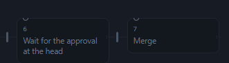
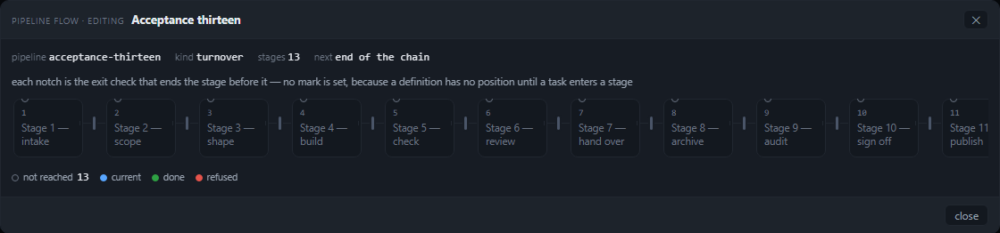
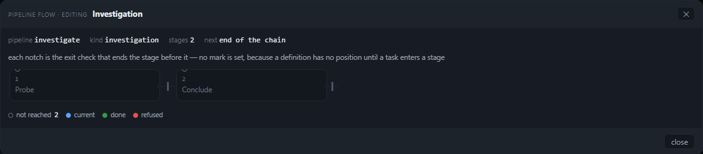
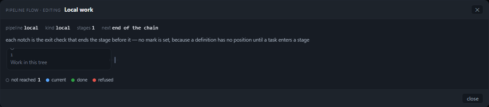
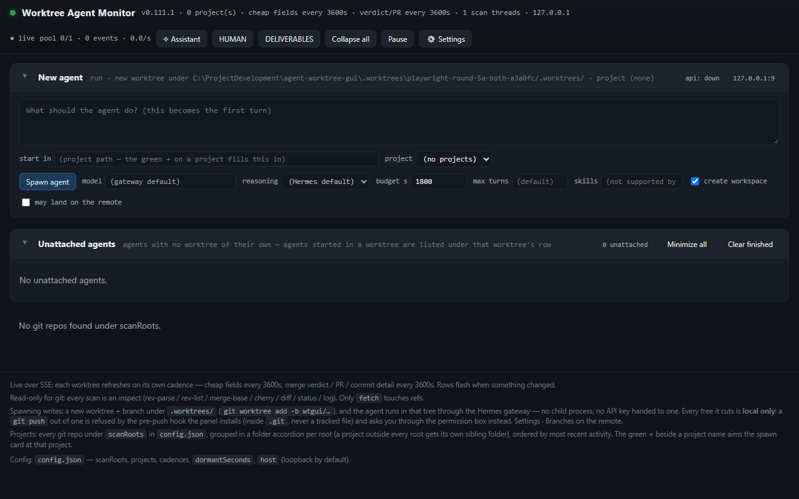
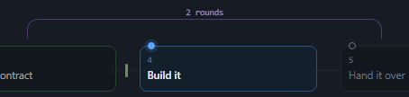
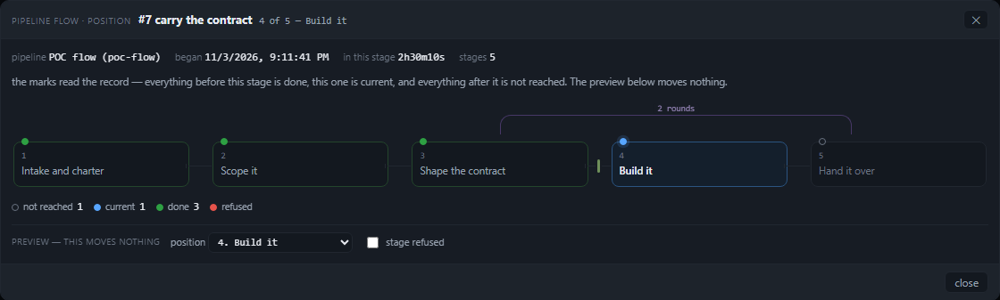
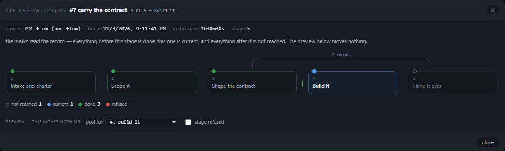

The pipeline flow, both routes: is it there, and does it look finished?
Two ways into the same dialog — a queue row's ⇢ press (position mode) and Settings > Pipeline > open the flow (edit mode) — judged separately on whether everything is visible at 1280 and 1821 and on whether the drawing looks clean and crisp. A pass with an ugly drawing is a fail.
The one-paragraph answer. Both routes exist and work. The queue row's ⇢ press opens the dialog in position mode with the task's marks, its gate notch and its loop arc; Settings' dropdown opens the same dialog in edit mode with every stage and every exit check. Visibility fails on the catalogue's long definitions: at seven stages the notch that ends the last stage is painted entirely outside the scroller and disappears, and at thirteen stages three stages and their notches are off the picture with nothing saying so. Cleanliness fails everywhere short: a one- or two-stage definition leaves 864 or 598 px of empty card, every title in edit mode is painted at 3.77:1, and on the live route the loop arc stops 52 px short of the stage it leaves. The brief's premise that route A has no caller is wrong — the control is the ⇢ glyph beside the pipeline chip, and it is wired.
1. The two verdicts, separately
Overall: FAIL — 6 findings (2 high, 3 medium, 1 low)
The contract (both routes, the modal's behaviour) passes 129/129. The
drawing does not. Each finding below carries the number that decided it, a path:line anchor and a
screenshot.
| Question | Route A — queue row, position mode | Route B — Settings > Pipeline, edit mode |
|---|---|---|
| Is everything visible at 1280 and at 1821? every stage, gate notch, loop arc, legend mark, position token; no clipping, no overflow, nothing painting under another |
PASS. 5 of 5 stages, 1 notch, 1 arc, 4 legend marks, the position token and the
4 of 5 — Build it subtitle are inside the scroller and the card. scrollWidth 1094 =
clientWidth 1094; 0 px hidden; no element overlaps another (F-verdicts V1–V6 all pass). |
FAIL. Seven stages: the last exit notch is clipped away and the drawing overflows by 15 px (finding 1). Thirteen stages: 3 stages and 3 notches are outside the scroller — 251 px hidden, st11 sliced by 26 px — with no count and no fit control (finding 2). One, two and three stages are all visible. |
| Does it look clean and crisp? spacing, alignment, contrast, no dead space, visible focus ring |
FAIL. The loop arc's source end stops 52 px short of the stage centre it leaves and
its label sits 26 px left of the midpoint (finding 6); 1 of 5 titles is at 3.77:1
(finding 4). Spacing and alignment otherwise hold; the focus ring is visible
(auto/1px). |
FAIL. 864 px (1 stage), 598 px (2) and 332 px (3) of empty card to the right of the
track (finding 3); every title is --dimmer on --surface =
3.77:1 at 11.5 px, below AA (finding 4); the backdrop press closes Settings as well as
the dialog (finding 5). The focus ring is visible (auto/1px). |
The two named widths are one width for this dialog
The card is width: min(1120px, 96vw)
(public/style.css:4057), and 96vw is 1229 px at 1280 and 1748 px at 1821, so the
1120 px cap binds at both: the card measures 1120×247.7 at 1280×800 (x 80, y 48) and
1120×247.7 at 1821×700 (x 350.5, y 42). Every other number in this report is identical to the pixel
across the two widths — that is why each judge line appears twice — so a width-only defect cannot show up
differently at the two sizes the reader named. The vertical difference (100 px less) never made the body scroll:
body clientHeight == scrollHeight in every case. The 1120 cap decides this dialog for any viewport
of 1167 px or more.
2. How it was measured
tools/verify-pipeline-flow-visible.mjs boots a throwaway panel of this checkout — its own
PANEL_CONFIG, jobs store, pipelines.json, an ephemeral port, a dead apiServer
and the board assistant off — and drives it with Chromium. Its fixture is one studio bundle with five stages, one
gate after S2 and one capped loop S4 → S2 (2 rounds), and one queue row (#7)
on stage S3 of that bundle. The catalogue is the shipped seed (definitions of 1, 2, 3, 6 and 7 stages)
plus one synthetic 13-stage definition, because the architecture review's acceptance names thirteen
(docs/reviews/pipeline-flow-architecture.md, “Acceptance”).
Every value is read from the DOM in the page: getBoundingClientRect against the scroller's client
box, scrollWidth/clientWidth, pairwise intersections, the arc's ends against the stage
centres it joins, the painted colours as a contrast ratio, and the computed outline of whatever the keyboard
focused. Nothing in this report is an impression of a screenshot; the screenshots illustrate the numbers.
| Case | Stages drawn | Stages outside | Notches outside | scrollWidth / clientWidth | Dead space right |
|---|---|---|---|---|---|
route B · local | 1 | 0 | 0 | 1094 / 1094 | 864 px |
route B · investigate | 2 | 0 | 0 | 1094 / 1094 | 598 px |
route B · turnover | 3 | 0 | 0 | 1094 / 1094 | 332 px |
route B · sefl-review-loop | 7 | 0 | 1 | 1109 / 1094 | 14 px |
route B · acceptance-thirteen | 13 | 3 | 3 | 1345 / 1094 | 14 px |
route A · poc-flow at S3 | 5 | 0 | 0 | 1094 / 1094 | 14 px |
Identical at 1280×800 and 1821×700. “Dead space right” is the body's right edge minus the track's right edge.
3. The premise check: route A has a caller — the brief is wrong about that
The brief asks to prove the absence of a position-mode caller: “no control in the row, no position-mode call, and say what a reader would expect to click.” Both halves are false, and the suite proves the opposite by driving it. What a reader clicks is the ⇢ glyph immediately right of the pipeline chip in any queue row (public/assistant.js:2286), whose title reads “the pipeline flow — every stage left to right, gates as notches, a capped loop as an arc, and where this task is. It reads only…”.
| What | Where | Proves |
|---|---|---|
queueFlowButton() renders <button class="as-qflow" data-as-qflow data-as-qown>⇢ |
public/assistant.js:2286 | the control IS in the row |
the delegated capture handler on #assistant calls openTaskPipelineFlow(own, task, btn) |
public/assistant.js:3361-3371 | the press is wired, and stops the row's console opener |
openTaskPipelineFlow() calls PipelineModal.open({ mode: "position", … }) — with loading: true, then with the flow, the position and the facts |
public/assistant.js:3228-3233, :3283-3289 | a position-mode call exists |
the only caller in public/app.js is openPipelineFlow() (edit mode) wired to #pipeline-flow-open |
public/app.js:20068, :20098-20101 | true, and it is route B, not the whole story |
Driven in the browser at both widths: the row's press opens #pipeline-modal with
data-mode="position", the kicker pipeline flow · position, the title
#7 carry the contract, the subtitle 4 of 5 — Build it, five stages marked
done done done current not-reached, the g2 notch and one arc 2 rounds. That is
finding-shaped news for the brief, not a defect in the panel: route A exists, and it is the cleaner of the two
routes.
4. Findings
1. Seven stages: the notch that ends the last stage is painted outside the scroller and vanishes visibility · high
The shipped sefl-review-loop definition ends every stage on an exit check, so the drawing should carry
seven notches. It carries seven in the DOM — the last at x 1191.5–1194.5 — but the scroller's client
box ends at x 1187, so the whole 3 px notch is clipped. The other six sit in their gaps at
x 238.9, 398.3, 557.8, 717.2, 876.6, 1036.1. The end stub also widens the content to
scrollWidth 1109 against clientWidth 1094: a 15 px horizontal overflow that no reader
can see a reason for, and no scrollbar painted in the capture.
Mechanism: stageHtml() gives the last stage a short stub (.pflow-link.is-end,
public/pipeline-flow.js:188-196), the stub is 18 px wide
(public/style.css:4019) and hangs off the column's right edge while the track's own
max-width ends the last column flush with the scroller
(public/style.css:3993, :3984). The architecture review already
measured this shape as “1202 > 1187 at seven stages”, and the critique that landed on main as
4ebaa62 names it F8 — “the last stage's gate stub overflows the canvas by 15 px”, the same
number measured here. The critique also makes a sharper point this round does not judge: a gate after the final stage
is a notch the driver never consults (nextStageOf returns done before it looks for a gate),
so the one notch that is clipped is also decoration. That is a truthfulness defect for another round; the pixel defect
is this one.


2. Thirteen stages: three columns and three notches are outside the picture, and nothing says so visibility · high
The 13-stage definition draws 13 nodes, but the scroller is 1094 wide and the content is
1345: 251 px hidden. st11 starts at x 1135 and is sliced by 26 px;
st12 (x 1239) and st13 (x 1343) are entirely absent. Their three
notches are outside too. At rest the reader sees ten columns and a half, and no cue — no count of hidden columns, no
fit control, no scrollbar in the capture. The architecture review's acceptance asks for exactly those two things at
thirteen stages; neither exists.
Mechanism: the track is a 13-column grid whose columns may not shrink below 78 px
(public/style.css:3989, :3983) inside an
overflow-x: auto scroller (public/style.css:3984); the markup carries no
statement about what is out of view (public/pipeline-flow.js:263-271).

3. One to three stages: the track is a small island in a 1120 px card cleanliness · high
The definitions a reader meets first are short — local is one stage and is the dropdown's default
selection, investigate is two, turnover three — and the drawing does not stretch to the card.
Measured dead space to the right of the track, at both widths:
- 1 stage — track 240 px in a 1118 px body: 864 px empty.
- 2 stages — track 506 px: 598 px empty.
- 3 stages — track 772 px: 332 px empty.
This is the “empty cards” the reader's screenshot shows, and it is the first thing a reader sees on
route B (the tab opens on local). The architecture review's acceptance sets the line at “no dead
band wider than 80 px beside the track at two stages”; the measurement is 598 px. Mechanism: the track is
width: 100% with a per-column cap of 240 px (public/style.css:3993) and no
centring, so a short sequence stays left-aligned at its natural width. The critique on main files the same root cause
as M5 — “the stage box and the arc are drawn from two different notions of width”, a width policy written in
three places (public/style.css:3989, :3993,
:4025) rather than a coordinate problem.

investigate, two stages: 598 px of empty card to the right of the second column.
local, one stage — the dropdown's default: a single 240 px card in a 1120 px dialog, 864 px
of nothing beside it.4. Every title in edit mode is painted at 3.77:1, below AA, at 11.5 px cleanliness · medium
A definition has no position, so every stage is drawn not-reached, and that mark's title colour is
var(--dimmer) (public/style.css:4013) on the node's
--surface. Measured from the painted colours: rgb(107,116,130) on
rgb(18,22,29) = 3.77:1, at 11.5px (public/style.css:4000).
That is below the 4.5:1 AA line for normal text, and in edit mode it is all the text in the drawing: 1/1 stages
for local, 2/2, 3/3, 7/7, 13/13. On the live route only the not-reached stage is affected (1 of 5); the
done and current titles clear AA.
5. A backdrop press closes the Settings window as well as the dialog behaviour · medium
Found while proving the brief's item 2 (“Esc closes the modal and NOT Settings underneath”). Escape
is correct: it is handled in the capture phase and stops propagation
(public/pipeline-modal.js:296-316), and the suite confirms Settings stays open behind it.
A press on the backdrop is not: the handler calls preventDefault() and closes, but never stops the
event (public/pipeline-modal.js:328-338), so the page's outside-press handler — which
closes Settings for any click whose path does not include #settings
(public/app.js:22743-22752) — sees the same press and closes the window too. Measured:
after the press, #pipeline-modal hidden and #settings hidden; the capture below is
the page after it.
The comment above the backdrop handler already names the collision it is trying to avoid (“one Esc, one surface”). One press closes two surfaces here, and the reader loses the tab they were editing in.

6. Route A: the loop arc stops 52 px short of the stage it leaves cleanliness · low
In position mode the capped loop S4 → S2 is one arc labelled 2 rounds, drawn above the
track with its ends near the two stage centres. The end over S2 is on the centre
(640.0 vs 639.6), but the end over S4 is at 1034.4 against a centre
of 1086.4 — 52 px short, a quarter of a 197 px column, so the right leg comes down over the source
stage's left edge rather than its middle. The label inherits the error: centred on the arc at
837.2, it sits 26 px left of the midpoint between the two stage centres (863.2).
Mechanism: the arc's left is computed from the to column's centre and its width from
(j − i) columns, which omits the (j − i) gaps the span crosses
(public/style.css:4029-4030). The architecture review filed this under “checked and
deliberately not filed” — “not a bug … exact for the case it was written for” — and the critique on main
recomputes the formula and refutes that: the right edge lands (j − i) × gap short, so the formula is exact
only for an arc of zero width (docs/reviews/pipeline-flow-architecture-critique.md, M4).
This round's measurement is that arithmetic on the live route: a two-column span over 26 px gaps, 52 px short.
Low severity here because the loop is two columns wide; the critique shows a four-column loop lands a full column off,
which is how the same defect becomes a wrong picture rather than a lopsided one.

5. What passed (so the scope of the failure is clear)
Contract: 129/129 checks, at both widths
- Route B — Settings > Pipeline, a definition chosen in the dropdown, open the flow: the dialog is in
edit mode, its kicker reads
pipeline flow · editing, its title is the definition's, every stage is drawn in order, every stage's exit check is a notch, every stage is marked not-reached, and there is no position subtitle. - Route A — the queue row's ⇢ press: position mode, kicker
pipeline flow · position, title#7 carry the contract, subtitle4 of 5 — Build it, marksdone done done current not-reached, theg2notch, one arc2 roundsabove the track, four legend marks with their counts, and a painted position token on the current stage. - The dialog — Escape closes it and leaves Settings open; focus returns to the control that opened it (the ⇢ press on route A); eight Tabs never leave the card; a press that begins inside the card and ends on the backdrop does not dismiss it; a press that begins and ends on the backdrop does; the page is unlocked afterwards.
- The drawing — no stage or arc overlaps another at any of the six cases; no stage title is truncated at 13 stages (78 px columns, 3-line titles); no title is set below 11 px; the card fits both viewports; the legend's four marks are inside the card everywhere.
- The focus ring is visible on a keyboard-reached control:
outline auto/1px, Chromium's own ring (public/style.css:4057 setsoutline: noneon the card, not on its controls). - 0 page errors, 0 console errors across both viewports and every case.

g2 notch sits between stages 3 and 4, the arc carries only its cap,
and the preview row says it moves nothing.
6. Limits
- The two named widths are one width for this card (see §1): the 1120 px cap binds at both, so the report cannot distinguish a width-specific defect at 1280 from one at 1821. It can say the card is identical.
- The 13-stage definition is synthetic. The seed ships no 13-stage definition; it exists because the
architecture review's acceptance names thirteen stages, and it is written into the throwaway panel's
pipelines.jsononly. The 7-stage case is the shippedsefl-review-loop. - One live fixture. Route A is one queue row (#7) on stage S3 of a five-stage bundle with one gate and one
loop; multi-loop lane stacking, refused gates and a task that looped back are not re-judged here (the shipped
tools/verify-pipeline-flow.mjsand the unit tests pin those behaviours). - No gateway. The panel is a throwaway instance with the assistant off and a dead API server; every line drawn comes through the panel's own routes and render path, but no live agent ran.
- The backdrop-press finding is behavioural, not geometric: it is reachable only from route B, where Settings is the window behind the dialog. Route A's opener lives in the assistant float, so the same press has nothing else to close.
- Nothing was fixed. The round's order is “fix nothing”; the harness records the verdicts and
exits 0 while the contract holds. It takes
--strictto make a failed judge line exit 1 — that is the switch the round that repairs these findings will gate on.
7. Reproduce
node tools/verify-pipeline-flow-visible.mjs --shots <dir> --json <file>
node tools/verify-pipeline-flow-visible.mjs --strict # exit 1 on a failed judge line
node tools/verify-pipeline-flow.mjs # the shipped behaviour gate: 49/49 on this base
node --test test/*.test.js # the unit suite
The harness prints one line per check and per judge verdict
(PASS, FAIL, JUDGE PASS, JUDGE FAIL) and writes the whole ledger —
every rect, colour and contrast ratio quoted above — to the --json path. Its screenshots are the ones
committed beside this page. The run quoted here: 129/129 contract checks, 94/126 judge lines, 0 page errors.